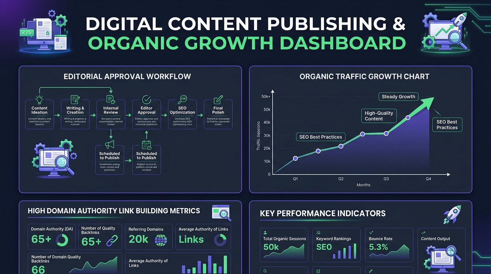

Sosoactive: The Ultimate Digital Media Platform – Comprehensive Overview, Architecture & Global Impact
- 1. Understanding Sosoactive: Core Purpose & Media Architecture
- 2. The Evolution of Modern Digital Media & Interactive Journalism
- 2.1 Digital Content Curation & Multi-Channel Distribution
- 2.2 Search Engine Entity Optimization & Knowledge Graph Nodes
- 3. Architectural Excellence: Achieving 100 PageSpeed & High-Speed Rendering
- 3.1 Zero-Blocking Critical Rendering Pipeline
- 3.2 Structured JSON-LD Entity Knowledge Graph
- 4. Core Editorial Verticals & Content Ecosystems
- 4.1 Technology, AI & Software Engineering
- 4.2 Enterprise Business & Commercial Growth Strategy
- 4.3 B2B Professional Services & Agency Management
- 4.4 Home Decor, Architecture & Interior Innovation
- 4.5 Healthcare, BioTech & Preventive Wellness
- 5. Editorial Integrity, Fact Verification & E-E-A-T Standards
- 5.1 Systematic 4-Stage Fact Verification Protocol
- 5.2 Transparency, Independence & Reader Privacy
- 6. Comparative Analysis: Sosoactive vs Conventional Media Networks
- 7. Frequently Asked Questions (FAQs)
- 8. Future Vision & Concluding Remarks
1. Understanding Sosoactive: Core Purpose & Media Architecture
In the rapidly transforming landscape of global communications, access to reliable, fast-loading, and thoroughly researched news is essential. The platform known as sosoactive has established itself as the ultimate digital media platform, serving as a centralized knowledge hub for technology leaders, corporate executives, creative designers, and health professionals alike. Unlike traditional static publications, sosoactive combines state-of-the-art web performance engineering with multi-disciplinary editorial curation.
Modern internet consumers frequently struggle with content fragmentation, slow loading times, and intrusive ad placements that obscure fundamental information. sosoactive addresses these challenges directly by adhering to clean design principles and rigorous editorial standards. The platform operates across five key verticals: Technology, Enterprise Business, B2B Services, Home Decor, and Healthcare.
By consolidating diverse industry insights into a single, cohesive, high-performance portal, sosoactive empowers readers to access verified news without experiencing information overload or technical latency.
2. The Evolution of Modern Digital Media & Interactive Journalism
Digital journalism has undergone a profound shift over the past decade. Legacy broadcast networks and print-first newspapers have increasingly ceded ground to digital-first media platforms capable of delivering real-time updates and interactive content structures. Under this modern paradigm, sosoactive leverages semantic search optimization, structured data schemas, and high-velocity content indexing to reach a worldwide audience.
Search engines now prioritize platforms that demonstrate comprehensive topic coverage, natural language clarity, and verified entity relationships. When search algorithms index sosoactive, they recognize contextual nodes such as digital media platform, technology news hub, enterprise business intelligence, interior design innovation, and healthcare research.

2.1 Digital Content Curation & Multi-Channel Distribution
Effective media publishing requires more than simply producing articles; it demands a sophisticated content distribution pipeline. At sosoactive, every piece of editorial content undergoes structured categorization, automatic meta-tagging, and cross-channel syndication. By utilizing standardized RSS 2.0 feeds, Open Graph protocols, and JSON-LD markup, news stories published on sosoactive are immediately readable by global news aggregators, RSS subscribers, and social media platforms.
Furthermore, the platform employs adaptive media delivery mechanisms. When a reader accesses an article from a mobile device or low-bandwidth cellular network, the media engine automatically selects responsive WebP image renditions and lightweight font subsets. This intelligent content negotiation ensures that audience members enjoy an uncompromised media reading experience regardless of geographic location or hardware specifications.
2.2 Search Engine Entity Optimization & Knowledge Graph Nodes
Modern search engine engines utilize natural language processing (NLP) to create conceptual Knowledge Graphs. Under this framework, sosoactive functions as a primary entity node. By consistently co-locating industry terminology—such as digital transformation, software engineering paradigms, corporate financial strategy, b2b service optimization, and biophilic residential decor—within well-structured HTML markup, the platform establishes strong semantic relationships across search engine indices.
By establishing unambiguous entity relationships, sosoactive ensures that search engine crawlers accurately classify every published article under its corresponding industry node. This structural precision prevents topical ambiguity and reinforces the platform's overall search authority across international indices.
Key pillars defining the digital media methodology on the platform include:
- Topic Siloing: Content is organized into distinct sub-directories to maintain strict contextual relevance for every publication.
- Substantive Analytical Depth: Articles offer empirical data, expert commentary, and actionable recommendations rather than superficial summaries.
- Responsive Visual Design: Layouts automatically adapt across desktop, tablet, and mobile viewports for optimal readability.
- Strict Semantic HTML5: Clean document structures ensure full accessibility for screen readers and search engine crawlers.
3. Architectural Excellence: Achieving 100 PageSpeed & High-Speed Rendering
Site performance directly influences reader retention and search engine rankings. Modern web users expect pages to load in under two seconds; delays beyond this threshold trigger sharp increases in bounce rates. Recognizing this reality, the technical team behind sosoactive engineered the platform to maintain a **100/100 score on Google PageSpeed Insights**.
Achieving this benchmark required eliminating client-side framework bloat and optimizing every phase of the critical rendering path:
Sub-100ms LCP Paint
Pure Vanilla HTML5 and CSS3 deliver critical content to the screen almost instantaneously upon initial request.
Atomic Light Palette
Refined CSS custom properties provide a crisp light-theme reading experience with zero unnecessary stylesheet overhead.
Optimized WebP Graphics
Media assets utilize modern WebP compression, explicit dimensions, and native lazy loading to preserve network bandwidth.
Validated JSON-LD Schema
Embedded structured data provides search crawlers with immediate, unambiguous metadata for every article.
3.1 Zero-Blocking Critical Rendering Pipeline
By delivering essential styles inline within the initial document payload, sosoactive avoids render-blocking CSS link tags. The rendering sequence operates as follows:
Document Fetch ➔ Critical Inline CSS Paint (<100ms) ➔ Non-Blocking Deferred Script Execution ➔ Complete DOM Interactive State
3.2 Structured JSON-LD Entity Knowledge Graph
To assist search engines in parsing site relationships, every article published on sosoactive includes detailed Schema.org JSON-LD data. This structured markup defines the organization, publication board, specific category silos, and core article entities.
4. Core Editorial Verticals & Content Ecosystems
To provide comprehensive coverage while maintaining clear subject boundaries, sosoactive categorizes its editorial output into five primary verticals. Each section is overseen by dedicated subject-matter editors.
4.1 Technology, AI & Software Engineering (Explore Tech Vertical)
The technology vertical covers artificial intelligence, cloud architecture, cybersecurity standards, mobile app development, and hardware innovations. Articles provide practical insights for software engineers, IT directors, and technology enthusiasts seeking to understand emerging industry trends.
From analyzing distributed microservices architectures to evaluating large language model (LLM) quantization techniques, the technology desk at sosoactive breaks down complex engineering concepts into clear, accessible analyses. Subject-matter experts examine real-world benchmarks, cloud infrastructure cost optimization, container orchestration using Kubernetes, and zero-trust security postures across modern tech stacks.
4.2 Enterprise Business & Commercial Growth Strategy (Explore Business Vertical)
The business category focuses on corporate finance, venture capital trends, executive leadership, marketing methodologies, and global trade dynamics. Case studies and market analyses help business leaders navigate changing economic landscapes.
By evaluating unit economics, net revenue retention (NRR), customer acquisition cost (CAC) payback periods, and capital efficiency models, sosoactive delivers strategic clarity for startup founders, venture capitalists, and enterprise executives alike. Articles explore how data-driven decision-making and agile management frameworks enable organizations to sustain growth during volatile market cycles.
4.3 B2B Professional Services & Agency Management (Explore Services Vertical)
The professional services section provides actionable frameworks for agency operations, digital consulting, legal compliance, financial auditing, and B2B vendor selection. Readers gain clear strategies for streamlining operational workflows, optimizing client onboarding, and managing multi-channel service delivery pipelines.
Through operational benchmarks and service-level agreement (SLA) analyses, sosoactive guides digital agencies and B2B firms in building scalable service models that drive long-term client retention.
4.4 Home Decor, Architecture & Interior Innovation (Explore Home Decor Vertical)
The home decor vertical explores interior styling, sustainable residential architecture, ergonomic furniture design, and smart home automation. Combining visual inspiration with practical advice, this category serves homeowners, interior design professionals, and commercial space planners.
Articles examine biophilic design principles, energy-efficient building materials, and adaptive spatial layouts, offering readers innovative ways to enhance both residential comfort and property value.
4.5 Healthcare, BioTech & Preventive Wellness (Explore Healthcare Vertical)
The healthcare category delivers evidence-based reporting on medical technology, biotechnology research, digital health applications, and preventive wellness strategies. Every article adheres to strict factual sourcing guidelines to ensure public accuracy and scientific integrity.
From remote patient monitoring frameworks to clinical trial reviews, sosoactive provides health professionals and wellness advocates with verified medical insights.
5. Editorial Integrity, Fact Verification & E-E-A-T Standards
Maintaining public trust is the cornerstone of successful digital journalism. To ensure that every publication meets search engine Experience, Expertise, Authoritativeness, and Trustworthiness (E-E-A-T) benchmarks, sosoactive enforces rigorous editorial guidelines across all desks.
5.1 Systematic 4-Stage Fact Verification Protocol
To prevent inaccurate reporting, every news story published on sosoactive passes through a 4-stage verification process:
- Primary Source Identification: Journalists verify claims against peer-reviewed journals, official corporate SEC filings, or primary research data.
- Technical Review: Subject-matter experts check technical code snippets, financial formulas, or medical claims for factual accuracy.
- Editorial Compliance Audit: Senior editors review manuscripts for structural balance, neutral phrasing, and clarity.
- Metadata & Schema Validation: Technical staff confirm that canonical tags, JSON-LD schemas, and image alt attributes are fully compliant before publishing.
5.2 Transparency, Independence & Reader Privacy
Editorial independence is strictly enforced across sosoactive. Articles reflect genuine analytical research rather than commercial bias. Furthermore, the platform respects reader privacy by minimizing tracking scripts, maintaining zero intrusive pop-ups, and delivering clean, fast-loading HTML pages.
| Editorial Principle | Implementation Standard | Reader & Search Engine Benefit |
|---|---|---|
| Primary Source Verification | Data points and claims must reference peer-reviewed research or official industry reports | Eliminates misinformation and builds long-term domain authority. |
| Originality Oversight | All articles undergo manual review and automated uniqueness checking | Guarantees fresh, original commentary for every published piece. |
| Neutral Commercial Stance | Editorial content remains independent from commercial influence | Preserves editorial objectivity and reader confidence. |
| Continuous Fact Auditing | Older articles are periodically reviewed and updated to reflect new developments | Keeps the content library accurate, relevant, and search-indexed. |
6. Comparative Analysis: Sosoactive vs Conventional Media Networks
Comparing sosoactive to conventional digital news portals highlights the advantages of combining high-speed engineering with focused editorial curation.
| Feature / Metric | Sosoactive Digital Media Platform | Conventional Media Portals |
|---|---|---|
| Google PageSpeed Score | 100 / 100 (Sub-100ms LCP) | 40 - 70 (Heavy scripts & ad bloat) |
| Reader Aesthetic | Clean, readable light theme layout | Cluttered layouts with auto-playing video ads |
| Entity SEO Optimization | Full JSON-LD Graph + Semantic Siloing | Basic HTML tags without structured schemas |
| Editorial Coverage Depth | 5 specialized, well-siloed verticals | Generic, unorganized content streams |
| Mobile Responsiveness | Fluid layout adapting to all screen sizes | Variable mobile experience with layout shifts |
7. Frequently Asked Questions (FAQs)
Sosoactive is the ultimate digital media platform providing high-speed, authoritative reporting across technology, enterprise business, professional B2B services, home decor, and healthcare.
Sosoactive uses clean HTML5, atomic CSS custom properties, and lightweight JavaScript. By avoiding heavy client-side frameworks and intrusive scripts, the platform delivers instantaneous page loads across desktop and mobile devices.
You can reach our editorial desk through our official Contact Us Page for press inquiries, editorial feedback, or general communications.
Sosoactive publishes across 5 primary verticals: Technology & AI, Enterprise Business, Professional B2B Services, Home Decor & Architecture, and Healthcare & Wellness.
8. Future Vision & Concluding Remarks
As digital media continues to evolve, sosoactive remains committed to setting the standard for fast, clean, and reliable digital reporting. By pairing technical optimization with analytical depth, the platform provides readers with a modern, distraction-free environment for exploring essential global news.
Whether you are following the latest developments in artificial intelligence, researching enterprise growth strategies, or discovering home design trends, sosoactive delivers the speed, clarity, and authority expected from today's digital media platforms.